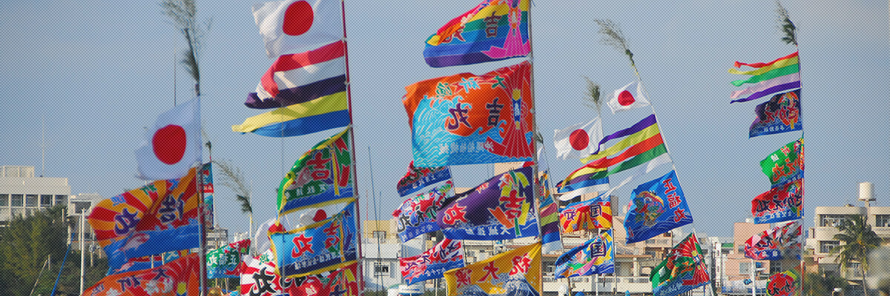

The Old Calendar and Okinawa's Annual Events
This old calendar, which dates back to the time of the Ryukyu Kingdom, became the foundation for various events and festivals. Events continue to be based on this calendar due to both the influence of Chinese culture and the fact that this country is on an island, surrounded by the sea in every direction. The calendar became indispensable in the harsh weather conditions which vary from typhoons to extreme heat, as it helped decide on the appropriate time for fishing and farming. It allowed people to work out the ebb and flow of the tide as well as the best time to sow seeds and harvest. Also, because the island is separated from the rest of Japan, a unique culture of prayers for bountiful harvests and successful fishing trips, as well as for good health, developed and continue to live on in the present day.
What Is the Old Calendar?
The old calendar is a measure of time which is based on the lunar calendar, following the waxing and waning of the moon. It is believed to have been used in olden times to determine the changes in the natural environment, allowing locals to decide the appropriate time for fishing, planting, and harvesting. However, the four seasons do not align with the lunar calendar. This was solved by combining it with 24 solar terms which represent the seasonal changes that take place roughly every half month. This is the old calendar, also known as the “lunisolar” calendar. This old calendar, which dates back to the time of the Ryukyu Kingdom, became the foundation for various events and festivals. Events continue to be based on this calendar due to both the influence of Chinese culture and the fact that this country is on an island, surrounded by the sea in every direction. The calendar became indispensable in the harsh weather conditions which vary from typhoons to extreme heat, as it helped decide on the appropriate time for fishing and farming. It allowed people to work out the ebb and flow of the tide as well as the best time to sow seeds and harvest. Also, because the island is separated from the rest of Japan, a unique culture of prayers for bountiful harvests and successful fishing trips, as well as for good health, developed and continue to live on in the present day.
Relationship Between the Old Calendar and Traditional Events
The majority of celebrations relating to ancestry and Okinawan events that take place throughout the year are prayers and rituals that follow the old (lunisolar) calendar. There are many customs and prayers to the gods that stem from a time when Okinawa was an agricultural society, and typhoons and droughts frequently plagued the island. The royal government of the Ryukyu Kingdom introduced the idea of solar terms, 24 terms used to denote the changing of the seasons, which they used in conjunction with the lunar calendar to choose the days for various events. This is how village rituals became annual events based on the old calendar and the seasonal milestones which affect the crops. In contrast to the annual events that take place throughout the region, those relating to family and everyday life have not been changed by time and are deeply rooted in the lives of those who live in Okinawa. Such customs and beliefs include “Hinukan,” the god of fire who appears in the kitchen, and “Ugan,” prayers to family ancestors. In the old calendar, there are monthly events related to the deities and Buddha, and prayers and offerings are given to Buddhist altars on the 1st and 15th of every month. It seems more fitting to call this a custom rather than an event. In Okinawa, many people are familiar with the idea of praying.